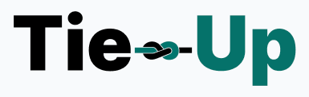

Bachillerato BT Tecnologías de la Información
Opción Bilingüe
Instituto Tecnológico Superior Paysandú
Facundo Duarte · Joaquín Castro · Bryan Chialvo
2.º MC
Katherin Bianchi · Federico Fagúndez
Documento original: 27/07/2026
Actualización de identidad: 02/10/2026
Al comenzar el proyecto, en el grupo se plantearon y analizaron diferentes posibilidades relacionadas con la prestación de servicios mediante plataformas web. Se evaluó desarrollar un sitio de compra y venta de productos digitales, un portal de empleo y una plataforma para conectar empresas con trabajadores independientes.
Finalmente se decidió desarrollar Tie-Up, una plataforma que facilita el contacto entre consumidores, empresas y profesionales digitales como diseñadores web, programadores, editores, community managers, creadores de contenido y freelancers. La idea surge de la necesidad de contar con un lugar donde encontrar profesionales confiables y comparar sus servicios de forma rápida y sencilla.
Tie-Up es una plataforma web diseñada para conectar personas y empresas con proveedores de servicios digitales y profesionales.
Los usuarios podrán buscar profesionales según la categoría del servicio que necesiten, visualizar sus perfiles, comparar experiencia y calificaciones, y contratar directamente al proveedor que mejor se adapte a sus necesidades.
Uno de los aspectos más importantes del sitio será su sistema de reseñas y puntuaciones, el cual permitirá a los clientes compartir su experiencia luego de contratar un servicio. Esto generará mayor confianza dentro de la plataforma y ayudará a otros usuarios a tomar mejores decisiones.
El sitio contará con diferentes secciones:
El objetivo principal del proyecto es desarrollar una plataforma web moderna que facilite la contratación de servicios digitales entre clientes y profesionales.
También se busca ofrecer una experiencia sencilla, rápida y segura para ambas partes, permitiendo encontrar talento especializado en pocos minutos.
El desarrollo de Tie-Up se realizará utilizando una arquitectura cliente-servidor, empleando tecnologías ampliamente utilizadas en el desarrollo web.
Para el diseño visual y la interacción con el usuario se utilizarán:
Se utilizará PHP para gestionar:
Se utilizará MySQL para almacenar:
El proyecto será desarrollado utilizando Visual Studio Code como editor principal. Se empleará XAMPP para ejecutar el servidor local durante el desarrollo y las pruebas del sistema.
El nombre Tie-Up se relaciona con la idea de unir y establecer vínculos, representando el propósito de la plataforma: conectar a personas y empresas con profesionales que ofrecen servicios digitales.
El logotipo combina las palabras «Tie», en negro, y «Up», en verde azulado, con una tipografía de trazos gruesos. Entre ambas aparece una cuerda que refuerza visualmente la idea de unión.
El isotipo de Tie-Up es la cuerda. Este símbolo representa el vínculo entre clientes y profesionales y la colaboración que la plataforma busca facilitar. La cuerda constituye el elemento gráfico que identifica a la marca más allá de su nombre.
La combinación de negro y verde azulado establece una identidad visual sencilla y reconocible. Como propuesta de comunicación, esta identidad busca transmitir confianza, cercanía y profesionalismo.
El verde principal de Tie-Up es #306E68. Se combina con el negro presente en el logotipo. El blanco se propone como fondo neutro para facilitar la lectura de la documentación.
| Color | HEX | RGB | Uso |
|---|---|---|---|
| Verde principal | #306E68 | 48, 110, 104 | Identidad de marca, títulos y elementos destacados. |
| Negro | #000000 | 0, 0, 0 | Texto «Tie» y detalles de la cuerda. |
| Blanco (neutro propuesto) | #FFFFFF | 255, 255, 255 | Fondos y espacios de descanso visual. |
La imagen del logo se conserva tal como fue proporcionada. El código de referencia para reproducir el verde de la marca es #306E68.
La referencia actual de diseño de Tie-Up se encuentra en Figma:
Ver la maquetación de Tie-Up en Figma
Pendiente de incorporar: capturas de la maquetación actual. El contenido visual del archivo de Figma no pudo verificarse durante esta actualización.